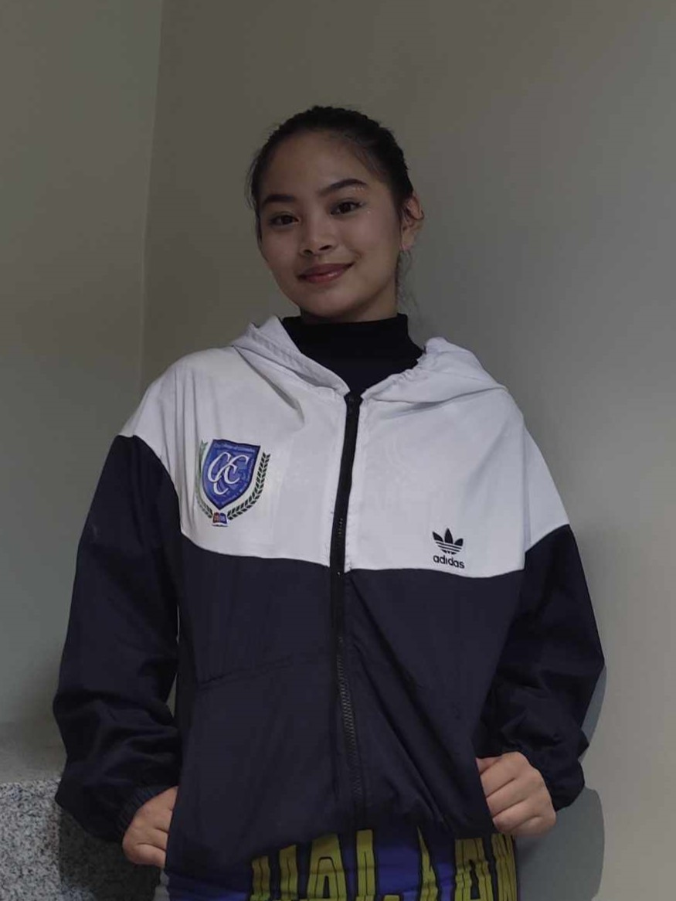
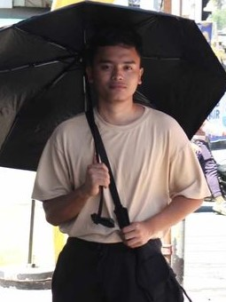

Welcome to allWays, your ultimate guide to navigating Calamba with ease. Our website is
dedicated to providing you with the shortest routes within our vibrant city, ensuring you reach your destination
swiftly and efficiently. Say goodbye to unnecessary detours and hello to a seamless travel experience.
Short Route Navigation: Empower users to effortlessly find the shortest and most efficient routes to their
desired destinations, optimizing travel time and enhancing convenience.
Time Management: Assist users in calculating their arrival and departure times, facilitating effective time
management for school-related and personal activities.
Event Exploration: Enhance community engagement by helping CCC students discover unfamiliar locations,
whether for off-campus events or non-academic gatherings within Calamba City.
The Developers
Danielle Mae S. Malubag
Zyrelle Jean L. Apuntar
Eisell Jean L. Romero
John Kyle J. Bardeloza
Thank you for using allWAYS!
_